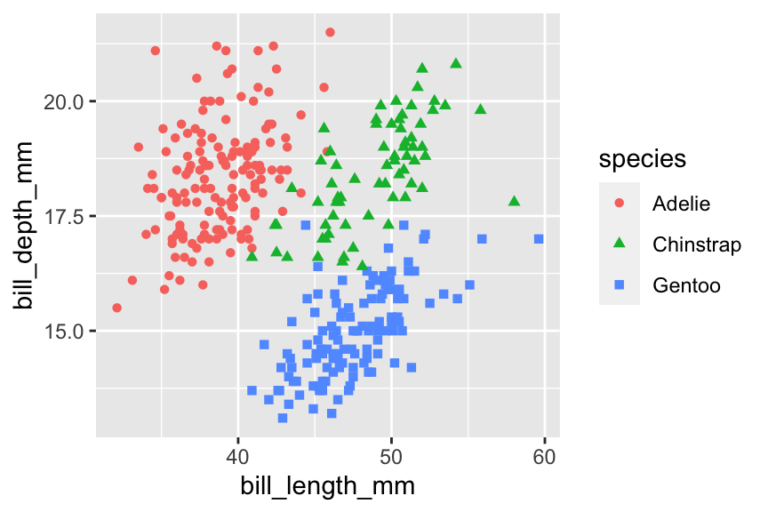

Data visualisation in R
Part I: Introduction to ggplot2
Recommended book
Preparation
You will find the material for this lecture on github here https://github.com/cbhurley/CRT2022vis and a copy of this lecture here
First install these packages
install.packages(c("tidyverse", "dataReporter", "timetk","palmerpenguins"))and load with
library(tidyverse)
library(timetk) # for the data
library(palmerpenguins) # more dataWhy visualise data?
We can summarise data with numeric summaries like mean, standard deviation and correlation. Why do we need more?
x1 x2 x3 x4
Min. : 4.0 Min. : 4.0 Min. : 4.0 Min. : 8
1st Qu.: 6.5 1st Qu.: 6.5 1st Qu.: 6.5 1st Qu.: 8
Median : 9.0 Median : 9.0 Median : 9.0 Median : 8
Mean : 9.0 Mean : 9.0 Mean : 9.0 Mean : 9
3rd Qu.:11.5 3rd Qu.:11.5 3rd Qu.:11.5 3rd Qu.: 8
Max. :14.0 Max. :14.0 Max. :14.0 Max. :19 y1 y2 y3 y4
Min. : 4.260 Min. :3.100 Min. : 5.39 Min. : 5.250
1st Qu.: 6.315 1st Qu.:6.695 1st Qu.: 6.25 1st Qu.: 6.170
Median : 7.580 Median :8.140 Median : 7.11 Median : 7.040
Mean : 7.501 Mean :7.501 Mean : 7.50 Mean : 7.501
3rd Qu.: 8.570 3rd Qu.:8.950 3rd Qu.: 7.98 3rd Qu.: 8.190
Max. :10.840 Max. :9.260 Max. :12.74 Max. :12.500 
Along the same lines is the Datasaurus dataset of Alberto Cairo, who constructs 12 pairwise plots sharing summary stats with a point plot of a dinosaur. See https://www.autodesk.com/research/publications/same-stats-different-graphs and https://cran.r-project.org/web/packages/datasauRus/vignettes/Datasaurus.html
The data
We will use a bike sharing dataset, from the UCI machine learning archive https://archive.ics.uci.edu/ml/machine-learning-databases/00275/
There is daily data and hourly, we will use the hourly.
The data is available in the R package timetk.
glimpse(bike_sharing_daily)Rows: 731
Columns: 16
$ instant <dbl> 1, 2, 3, 4, 5, 6, 7, 8, 9, 10, 11, 12, 13, 14, 15, 16, 17, …
$ dteday <date> 2011-01-01, 2011-01-02, 2011-01-03, 2011-01-04, 2011-01-05…
$ season <dbl> 1, 1, 1, 1, 1, 1, 1, 1, 1, 1, 1, 1, 1, 1, 1, 1, 1, 1, 1, 1,…
$ yr <dbl> 0, 0, 0, 0, 0, 0, 0, 0, 0, 0, 0, 0, 0, 0, 0, 0, 0, 0, 0, 0,…
$ mnth <dbl> 1, 1, 1, 1, 1, 1, 1, 1, 1, 1, 1, 1, 1, 1, 1, 1, 1, 1, 1, 1,…
$ holiday <dbl> 0, 0, 0, 0, 0, 0, 0, 0, 0, 0, 0, 0, 0, 0, 0, 0, 1, 0, 0, 0,…
$ weekday <dbl> 6, 0, 1, 2, 3, 4, 5, 6, 0, 1, 2, 3, 4, 5, 6, 0, 1, 2, 3, 4,…
$ workingday <dbl> 0, 0, 1, 1, 1, 1, 1, 0, 0, 1, 1, 1, 1, 1, 0, 0, 0, 1, 1, 1,…
$ weathersit <dbl> 2, 2, 1, 1, 1, 1, 2, 2, 1, 1, 2, 1, 1, 1, 2, 1, 2, 2, 2, 2,…
$ temp <dbl> 0.3441670, 0.3634780, 0.1963640, 0.2000000, 0.2269570, 0.20…
$ atemp <dbl> 0.3636250, 0.3537390, 0.1894050, 0.2121220, 0.2292700, 0.23…
$ hum <dbl> 0.805833, 0.696087, 0.437273, 0.590435, 0.436957, 0.518261,…
$ windspeed <dbl> 0.1604460, 0.2485390, 0.2483090, 0.1602960, 0.1869000, 0.08…
$ casual <dbl> 331, 131, 120, 108, 82, 88, 148, 68, 54, 41, 43, 25, 38, 54…
$ registered <dbl> 654, 670, 1229, 1454, 1518, 1518, 1362, 891, 768, 1280, 122…
$ cnt <dbl> 985, 801, 1349, 1562, 1600, 1606, 1510, 959, 822, 1321, 126…This dataset contains the daily count of rental bike transactions between years 2011 and 2012 in Capital bikeshare system with the corresponding weather and seasonal information.
The two temperature variables temp and atemp (feeling temperature), both are normalised.
Some of these variables should be factors, so we will fix this up first.
Notice the dataset is a tbl, which is a variant of data.frame.
Some of these variables should be factors, so we will fix this up first, using dplyr::mutate
bike <- bike_sharing_daily
bike <- mutate(bike,
season= recode_factor(season,
`1`="Winter", `2`="Spring",
`3`="Summer", `4`="Fall"))The season variable is numeric and it should be a factor. recode_factor will change it to a factor. It also orders the levels corresponding to their numeric ordering.
head(bike$season)[1] Winter Winter Winter Winter Winter Winter
Levels: Winter Spring Summer FallWe will do similar on the variables mnth, holiday, workingday, weathersit.
bike <- bike %>%
mutate(weathersit=
recode_factor(weathersit,
`1`="clear", `2`="cloudy",
`3`="lightP", `4`="heavyP"))Notice here we also make use of the pipe %>% operator. The data bike is fed as input into the next calculation.
bike <- bike %>%
mutate(holiday=recode_factor(holiday, `0` = "No", `1`="Yes")) %>%
mutate(workingday = recode_factor(workingday, `0` = "No", `1`="Yes")) %>%
mutate(yr = recode_factor(yr,`0` = 2011, `1`=2012))For the variable month, we would like to recode to the values in
month.abb [1] "Jan" "Feb" "Mar" "Apr" "May" "Jun" "Jul" "Aug" "Sep" "Oct" "Nov" "Dec"without having to type all the months in.
f <-factor(month.abb[bike$mnth]) # will do all the months alphabetically
str(f) Factor w/ 12 levels "Apr","Aug","Dec",..: 5 5 5 5 5 5 5 5 5 5 ...f <- factor(month.abb[bike$mnth], levels=month.abb) # will order the months correctly
str(f) Factor w/ 12 levels "Jan","Feb","Mar",..: 1 1 1 1 1 1 1 1 1 1 ...bike$month <- factor(month.abb[bike$mnth], levels=month.abb)
bike$yday <- lubridate::yday(bike$dteday) # gives the day in year of the dteday variableNow we check the data again
glimpse(bike)Rows: 731
Columns: 18
$ instant <dbl> 1, 2, 3, 4, 5, 6, 7, 8, 9, 10, 11, 12, 13, 14, 15, 16, 17, …
$ dteday <date> 2011-01-01, 2011-01-02, 2011-01-03, 2011-01-04, 2011-01-05…
$ season <fct> Winter, Winter, Winter, Winter, Winter, Winter, Winter, Win…
$ yr <fct> 2011, 2011, 2011, 2011, 2011, 2011, 2011, 2011, 2011, 2011,…
$ mnth <dbl> 1, 1, 1, 1, 1, 1, 1, 1, 1, 1, 1, 1, 1, 1, 1, 1, 1, 1, 1, 1,…
$ holiday <fct> No, No, No, No, No, No, No, No, No, No, No, No, No, No, No,…
$ weekday <dbl> 6, 0, 1, 2, 3, 4, 5, 6, 0, 1, 2, 3, 4, 5, 6, 0, 1, 2, 3, 4,…
$ workingday <fct> No, No, Yes, Yes, Yes, Yes, Yes, No, No, Yes, Yes, Yes, Yes…
$ weathersit <fct> cloudy, cloudy, clear, clear, clear, clear, cloudy, cloudy,…
$ temp <dbl> 0.3441670, 0.3634780, 0.1963640, 0.2000000, 0.2269570, 0.20…
$ atemp <dbl> 0.3636250, 0.3537390, 0.1894050, 0.2121220, 0.2292700, 0.23…
$ hum <dbl> 0.805833, 0.696087, 0.437273, 0.590435, 0.436957, 0.518261,…
$ windspeed <dbl> 0.1604460, 0.2485390, 0.2483090, 0.1602960, 0.1869000, 0.08…
$ casual <dbl> 331, 131, 120, 108, 82, 88, 148, 68, 54, 41, 43, 25, 38, 54…
$ registered <dbl> 654, 670, 1229, 1454, 1518, 1518, 1362, 891, 768, 1280, 122…
$ cnt <dbl> 985, 801, 1349, 1562, 1600, 1606, 1510, 959, 822, 1321, 126…
$ month <fct> Jan, Jan, Jan, Jan, Jan, Jan, Jan, Jan, Jan, Jan, Jan, Jan,…
$ yday <dbl> 1, 2, 3, 4, 5, 6, 7, 8, 9, 10, 11, 12, 13, 14, 15, 16, 17, …A good way to check the data for oddities is to use a package that will do a plot, and summary of all the variables. You could do this manually, one variable at a time, but this saves work:
dataReporter::makeDataReport(bike,replace=TRUE)You will find the results at dataReporter_bike.pdf.
One thing to note from the results, is that weathersit has only three levels. The level heavyP did not occur in the data and was dropped by recode_factor.
ggplot2
In R, you can use base R (barplot, hist, plot). Here we will use ggplot2 functions.
ggplot2 is an R package authored by Hadley Wickham for elegant graphics in R. Click on this link https://ggplot2.tidyverse.org for lots of information.
Also check out the primer at https://rstudio.cloud/learn/primers/3
You will find more references at the end of this document.
Basic plots
Histogram
Our report used one plot per variable, barplots for factors and histograms for numeric variables.
ggplot(data=bike,
mapping= aes(x=cnt)) + geom_histogram()
ggplot(data=bike, mapping= aes(x=cnt)) +
geom_histogram(fill="lightblue", color="navy")
Here mapping describes how the data is mapped to aesthetics.
Aesthetics are what you see on the plot. Here that
cntgoes on the x axis.The geom is what is drawn, here a histogram.
In the second variant, the fill colour and outline colour for the bars is specified.
You could use another variable for the fill or color:
ggplot(data=bike, mapping= aes(x=cnt, fill=yr)) +
geom_histogram(color="black")- You are seeing here for each bar, the count for 2011 and 2012.
Barplot
For the barplot, the x variable is a factor, or something that can be interpreted as a factor.
ggplot(data=bike, mapping= aes(x=weathersit)) +
geom_bar(fill="lightblue", color="navy")
You can add color to this
ggplot(data=bike, mapping= aes(x=weathersit, fill=yr)) +
geom_bar( )
and switch to proportions with
ggplot(data=bike, mapping= aes(x=weathersit, fill=yr)) +
geom_bar(position="fill")
geom_col is like geom_bar, except you have a y variable. The plot below shows the number of bikes rented for each month, and in the second variant we colour by year.
ggplot(data=bike, mapping= aes(x=month, y=cnt)) +
geom_col(color="lightblue", fill="lightblue")ggplot(data=bike, mapping= aes(x=month, y=cnt, fill=yr)) +
geom_col()
A scatterplot
The scatterplot is for two numeric variables, and you use geom_point
ggplot(data=bike, aes(x=temp, y=cnt)) + geom_point()
We can easily bring a third variable for the point colour, and a fourth for shape:
ggplot(data=bike, aes(x=temp, y=cnt, color=yr)) +
geom_point()ggplot(data=bike, aes(x=temp, y=cnt, color=yr, shape=season)) +
geom_point()The plot with shape and colour works better when there is more separation between the groups.
In the plot below, weekday is a numeric variable so it is mapped to shades of blue. This variable is better represented as a factor, which changes the ggplot.
ggplot(data=bike, aes(x=temp, y=cnt, color=weekday)) +
geom_point()bike$weekday <- factor(bike$weekday)
ggplot(data=bike, aes(x=temp, y=cnt, color=weekday)) +
geom_point()Would we expect the relationship between cnt and temp to change with weekday?
A time plot
ggplot(data=bike, aes(x=dteday, y=cnt)) +
geom_line()
We could use geom_point here but geom_line connects the dots.
Note that dteday is a date variable in the dataset, which is interpreted correctly for the plot.
library(lubridate)
ggplot(data=bike, aes(x=yday, y=cnt, color=yr)) +
geom_line()Practice 1
Using the penguins dataset, make these two plots:

Solution
ggplot(penguins, aes(x = island, fill = species)) +
geom_bar()
ggplot(data = penguins, aes(x = bill_length_mm, y = bill_depth_mm)) +
geom_point(aes(color = species,
shape = species)) Anatomy of a ggplot
We have seen that aesthetics are linked to variables in a dataset. Aesthetics we have considered are x, y, fill and color.
Here are some other aesthetics (figure from Wilke book)
- shape and line type aesthetics are for categorical data (ie factors)
- others can represent factors or numeric variables
scales map data values into aesthetics. Eg use scale_x_log10() to log the x coordinates. Default is scale_x_continuous. Adjust this to change axes, for example
ggplot(data=bike, aes(x=yday, y=cnt, color=yr)) +
geom_line()+ scale_x_log10()
layers components of the plot are added in layers, using +
legend refers to the color index on the right. You will get legends for fill, linetype and other aesthetics.
themes refer to non-data components, the background, title, font and so on. Work on this to pretty-up the plot.
facets are important, this is a way to split up a plot by a factor. It increases the number of dimensions that can be plotted.
ggplot(data=bike, aes(x=temp, y=cnt, color=yr)) +
geom_point()+
facet_wrap(vars(season))More on layers
In ggplot the idea is that you build up to the desired plot bit by bit.
Going back to the scatterplot, let’s add a smooth
ggplot(bike, aes(x=yday, y=cnt))+
geom_point(aes(color=yr))+
geom_smooth(se=FALSE)In the version above, there is one smooth for the two years. This is because the geom_smooth inherits the aesthetics from the call to ggplot, but as we specified the color in geom_point this was not respected by the smooth.
If we move color=yr back to aesthetic in the call to ggplot, the grouping is also used by the smooth, so we get two separate smooths.
ggplot(bike, aes(x=yday, y=cnt, color=yr))+
geom_point()+
geom_smooth(se=FALSE)By default geom_smooth uses loess, for 1000 observations or less, and a gam otherwise.
More on facets
More than one variable can be added to the facet wrap. For example, you could use facet_wrap(vars(season, yr)), or even better facet_grid
ggplot(data=bike, aes(x=temp, y=cnt, color=yr)) +
geom_point()+
facet_grid( rows=vars(workingday),cols=vars(season))And if we add smooths or other fits, these will respect the groups for the colors and facets.
ggplot(data=bike, aes(x=temp, y=cnt, color=yr)) +
geom_point()+
facet_grid( rows=vars(workingday),cols=vars(season))+
geom_smooth(se=F)
Suppose you want to fit regression lines instead, then simply use method=lm in the geom_smooth.
This will be essentially fitting the model to the interaction of season and yr with temp.
To compare the fit with and without interaction, we create the fit and added the fitted values to the dataset, and then use geom_line.
fit <- lm(cnt ~ temp+season+yr, data=bike)
bike %>%
mutate(fit = fitted(fit)) %>%
ggplot(aes(x=temp, y=cnt, color=yr)) +
geom_point(size=1)+ # points smaller
facet_grid( rows=vars(workingday),cols=vars(season))+
geom_smooth(method=lm, se=F)+
geom_line(aes(y=fit), linetype="twodash", size=1.5)
The fit without interaction does poorly for summer.
Practice 2
Using the penguins dataset, make these two plots


Hint: there are a few ways to get rid of the NA in the sex legend, one is to use scale_colour_discrete(na.translate = FALSE)
Solution
ggplot(data = penguins, aes(x = bill_length_mm, y = bill_depth_mm)) +
geom_point(aes(color = sex))+
facet_wrap(~ species)
ggplot(data = penguins, aes(x = bill_length_mm, y = bill_depth_mm, color=sex)) +
geom_point()+
facet_wrap(~ species)+
geom_smooth(method="lm", se=FALSE)+
scale_colour_discrete(na.translate = FALSE)After that you can check out many more examples with this data at https://allisonhorst.github.io/palmerpenguins/articles/intro.html
Alternatives to histogram
Density plot
We can fit a density estimate to one numeric variable, just replace geom_histogram with geom_density
Here we compare the histogram and density
ggplot(data=bike, aes(x=cnt)) +
geom_density(color="red")+
geom_histogram(aes(y=after_stat(density)),fill="lightblue", color="navy", alpha=.5)If you use a fill aesthetic for the density you get
ggplot(data=bike, aes(x=cnt, fill=yr)) +
geom_density(alpha=.5)alpha gives some transparency.
Boxplots
A boxplot in ggplot needs a y and x variable.
ggplot(data=bike, aes(y=cnt,x=season)) +
geom_boxplot() If you do not need an x variable use:
ggplot(data=bike, aes(y=cnt), x=0) + # any number will do
geom_boxplot() Violin plots are a variant using a density folded-over
ggplot(data=bike, aes(y=cnt,x=season)) +
geom_violin(fill="lightblue")ggridges is an add-on package to ggplot which arranges multiple density plots in a staggered fashion
# install.packages("ggridges")
library(ggridges)
ggplot(data=bike, aes(x=cnt,y=season)) +
geom_density_ridges(fill="lightblue") +
xlab(NULL)Sometimes these are referred to as joy plots, as they are similar to cover of the famous Joy Division album Unknown Pleasures.
References
Data visualization a practical introduction by Kieran Healy https://socviz.co
Fundamentals of Data Visualization by Claus Wilke https://clauswilke.com/dataviz/ (no R)